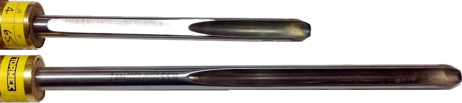

|
Detail & Spindle Gouges
|
|
Detail Gouges and Spindle Gouges are different in the shape or depth of the flute. (This article by Joe Larese, A Guide to Gouges gives a good overview of the differences.)
Regardless of the flute, the sharpening is the same.
Guidelines shown below are for use with the Tormek Spindle Gouges (SVD-186 R, SVD-186, or SVD-185).
|
Without craftsmanship, inspiration is a mere reed shaken in the wind.
Unknown
|
|
General Guidelines
|
|
α
|
Relief
(if used)
|
Tormek SVD-186
|
Comments
|
Recommended
Tormek Jig
|
|
JS
|
P
|
Hole
|
|
30°
|
5° - 10°
|
2
|
55 mm
|
B
|
α can range from 30° - 40°.
For tight spots, detail work and finest finish. When the flute is shallow, this is known as a Detail Gouge. Traditionally, the wings are swept back quite far.
Not recommended for starter-level turners.
|

SVD-186 R
|
|
|
45°
|
2
|
65 mm
|
A
|
α can range from 35° - 45°.
Standard profile. For turners of all skill levels.
|
Notes & Comments
Marty Kiminsky noted "Woodturning" magazine (issue # 352) these α angles for gouges:
|
Gouge Type
|
Generally
Recommended
|
Personal
Preference
|
|
Detail Gouges
|
40°
|
40°
|
|
Spindle Gouges
|
25-40°
|
40°
|

When the tool gets too short to be held by the jig, you may be able to grind off the top as shown in the upper tool below. This flat area allows for the jig to hold the tool without the tool slipping or rotating.
Or, when the tool gets too short to be held by the jig, consider making it into a beading tool (video).
|
More Information
Books & Papers
Published Articles
Videos & Presentations
- Tormek Sharpening Classes: Part 5 - Woodturning Tools (YouTube video). Want to learn how you get your woodturning tools razor-sharp? In this week's sharpening class we take a closer look at the tools for the woodturner; Gouges, skews, parting tools, scrapers, cutters and more. Sebastien and Wolfgang will show you the methods for sharpening all these turning tools and how you achieve repeatable edges every time. Stay tuned and hit us with your questions during the stream.
- Tormek Live Sharpening Class - Part 9 - Sharpen a flat bevel with Tormek MB-100 on a diamond wheel (YouTube video). In this episode we learn how to use the Tormek MB-100 Multi Base to sharpen a completely flat bevel ▼, on the side of Tormek's diamond wheels DC-250, DF-250 and DE-250. For some tools, such as 🎻 luthier knives,🔪 Kiridashi knives, v-tools, chip carving knives and Japanese plane irons, a completely flat surface on the bevel is preferred over a slightly concave, which you get when you sharpen on the rounded part of the grinding wheel. For some people this is more of a personal preference.
Regardless of what might be the reason to want a flat bevel, Sèbastian and Wolfgang show how to achieve it with your Tormek wet sharpening system, They will also touch upon the differences between the different types of bevels.
- Tormek Sharpening Classes: Part 23 - Reshaping woodturning tools on a bench grinder (YouTube video). In this episode of the Tormek sharpening classes we explain how you can quickly and with full control, re-profile your turning tools on your bench grinder. The BGM-100 Bench Grinder Mounting Kit allows you to use the same jig settings as on your water-cooled Tormek sharpening system. It is therefore easy to do the rough shaping on the bench grinder and then continue to sharpen and maintain the edge of your Tormek machine.
- How to sharpen bowl and spindle gouges - Tormek SVD-186 Gouge Jig - with Nick Agar (YouTube video). In this episode Nick Agar shows how you create a fingernail grind on your woodturning gouge and to replicate this grind every time. Nick goes through the procedure step by step using Tormek's TTS-100 Turning Tool Setter, the SVD-186 Gouge Jig, the SB-250 Blackstone Silicon and the LA-120 Profiled Leather Honing Wheel.
- Alan Holtham - Tormek SVD-186 Gouge Jig (YouTube video)
- David Peters - Tormek SVD-186 Gouge Jig Review and Comparison to the 185 (YouTube video)
- Sharpen gouges with the Tormek Gouge Jig SVD-185 (YouTube video)
- Jeff Farris - Sharpening with the Tormek SVD-185 Gouge Jig (YouTube video)
- Sharpen short edge tools with the Tormek Short Tool Jig SVS-32 (YouTube video)
- Tormek Turning Tool Setter TTS-100 (YouTube video)
- Tormek AngleMaster WM-200 (YouTube video)
Tormek is a copyrighted logo of Tormek AB. Its presentation on this site is used to help the user quickly understand when specific Tormek tools, jigs, or setting are being used. For specific information regarding Tormek AB, or its products, please refer to the www.Tormek.com.